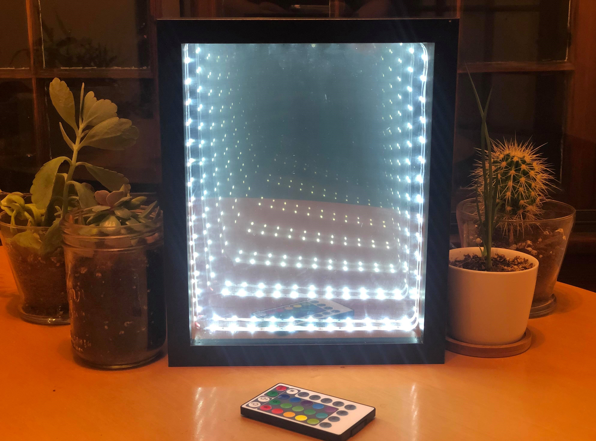
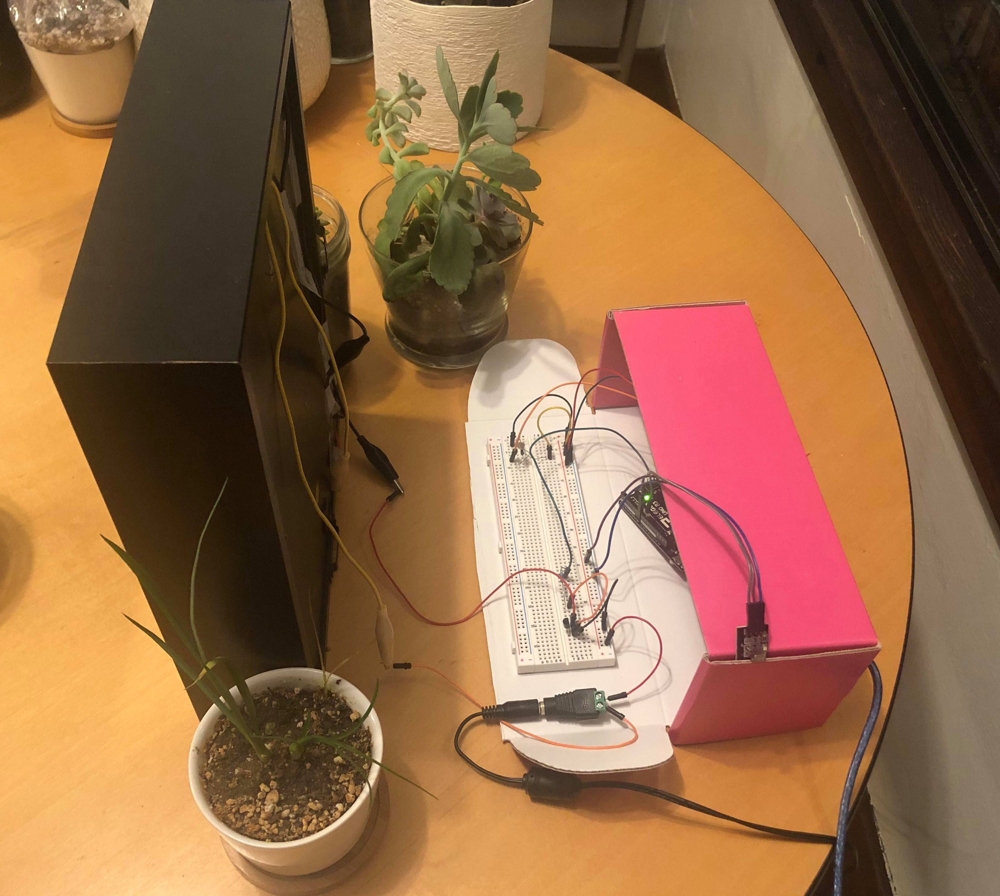
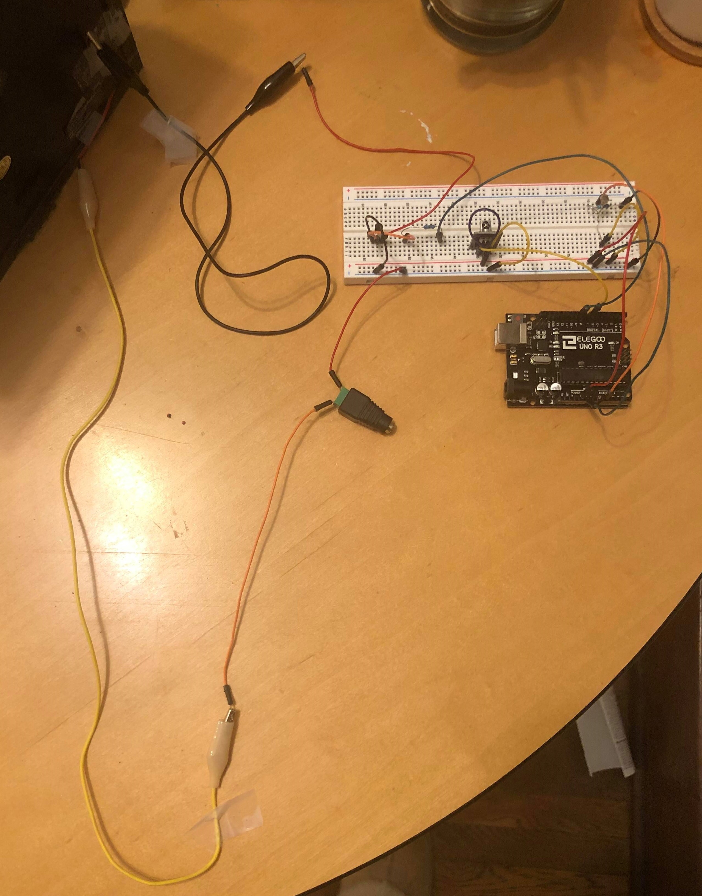
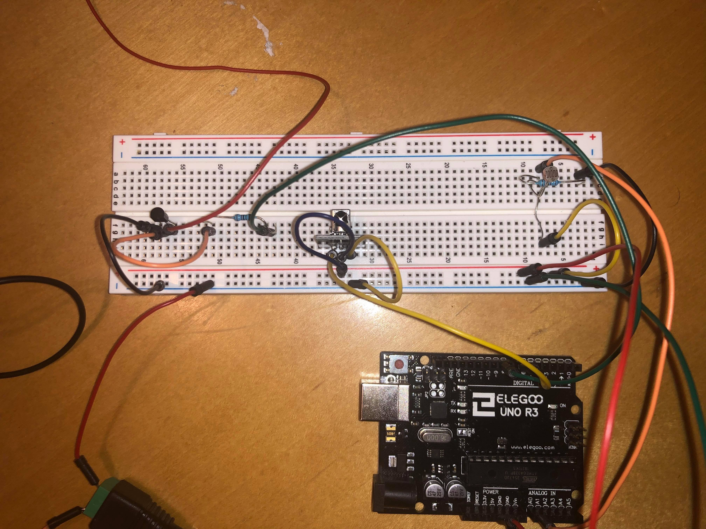
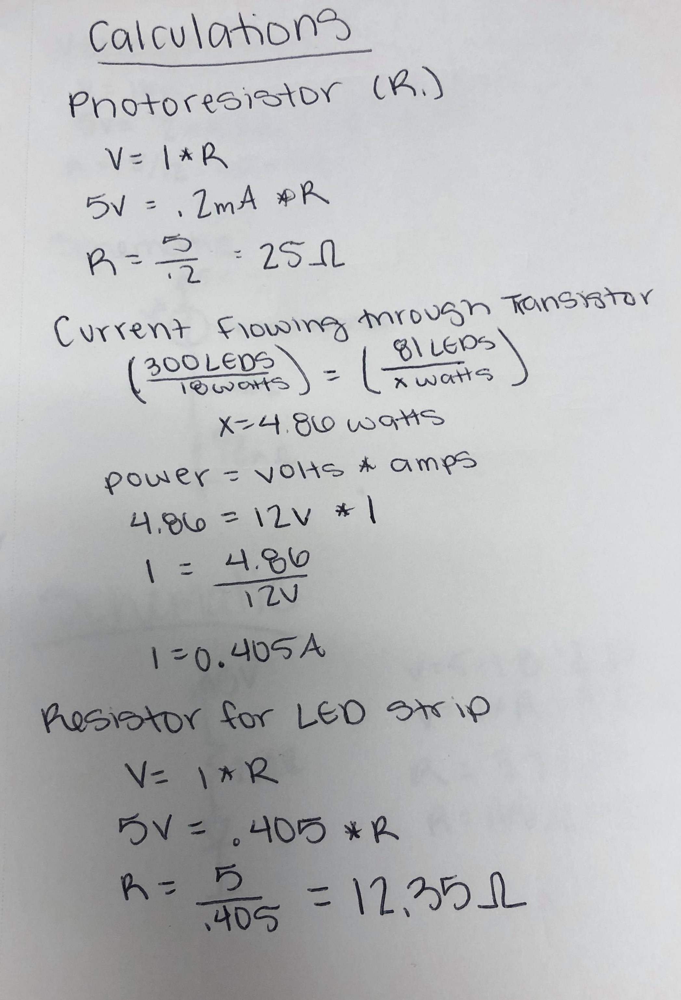
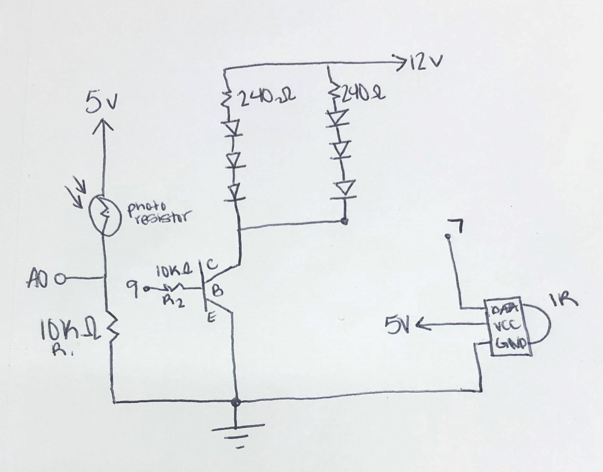
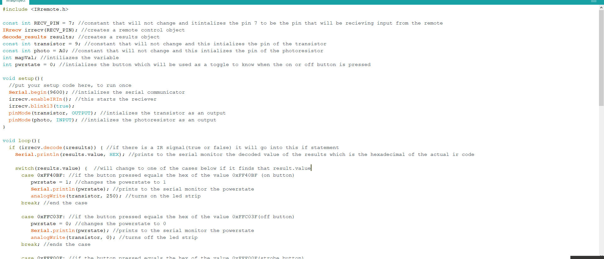
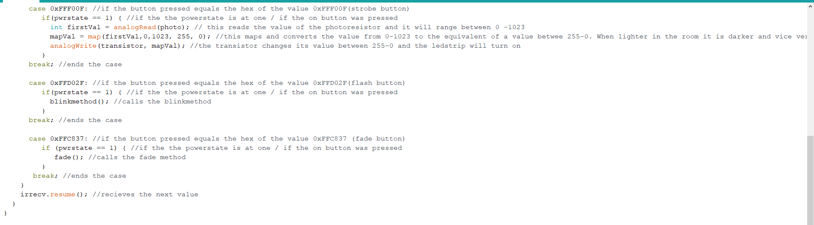
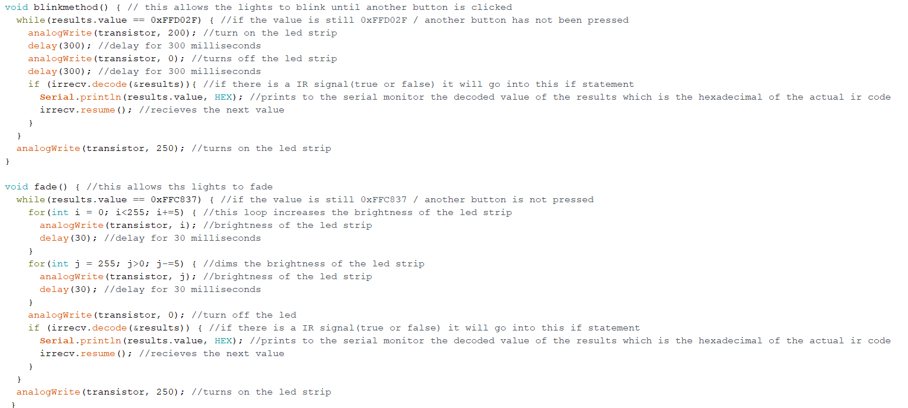

Here is an overview of what I did for my final project! I will talk about the concept, materials, and technical implementation. There will be pictures throughout the page and a video at the end.
The inspiration for the infinity mirror came from Yayoi Kusama. She created an art exhibition that included a room called Infinity Mirror that was at the Seattle Art Museum. An infinity mirror is an illusion of using mirrors to be angled a certain way to make it look like lights or whatever object is going on forever. For my project I am using lights in a shadow box that will be controlled by a remote. The remote will have four different modes: normal, flash, fade, and strobe. Normal will be the lights just being on, flash is the lights blinking, fade is the lights fading on and off, and strobe is based on the brightness in the room. So, in one sentence the concept is: Using a remote to control a led strip that is in a box to create the illusion of the lights going on forever. Here are two pictures of the infinity mirror.


In order to make this an enclosed circuit I found a box that can easily store all the materials needed. The breadboard is stuck to the lid of the box and so is the power for the led strip. The arduino is then taped onto the inside of the box. When you want to use the mirror all you have to is to take the lid off of the box and attach the alligator clips to the LED strip and plug in the power source.
Transistor, led strip, 2 10K resistors, photoresistor, ir remote, ir sensor, breadboard, arduino, 2 alligator clips, 12V power source, 13 wires, shadow box, glass, window-tint, and mirror.
Before I began making the mirror I watched and read tutorials. Through this I learned that I will need a shadow box, glass, two way window tint, a mirror, and a LED strip. To create the infinity mirror you must put the window tint on one side of the glass. Once you let that dry and make sure there are no air bubbles you insert that into the frame, glass side facing down when putting in, so that the window tint is facing into the picture frame. Next you put in a spacer, like wood, which comes with a shadow box. The LED strip should be put onto the spacer. Next you put the mirror in, but make sure that the LED wires are sticking out side of the frame, so you can attach the alligator clips. That is all it takes to build the infinity mirror, next is technical implementation.
For each section there will be a brief description on what I did and what you would need to do in order to create this project yourself.
 
This is the circuit and in order to recreate this make sure that your input and outputs are connected to the right pins. The photoresistor (input) is connected to pin A0, and the transistor (ouput) is connected to pin 9, and the ir sensor (input) is connected to pin 7.
 
This is the schematic for the circuit and the calculation for the resisitors. For the first calculation I used 5V because this is the voltage coming from the arduino board. I used 20mA for it because that is the desired current. I used a 10K resistor for R1 because it could be anything over 25 ohms. I used a 10k resistor for all of them though to insure that there will not be a short and it limits the current.
For the second calculation I was finding how much current is running through the transistor. I found how many lights I was using and found the watts. Using this I found how much current is running through my transistor. As long as it is under.6A then I am not going over the max current. For the last calculation I was finding what the minimum resistance for the transistor which is 12.35 but I used a 10K resistor to insure that there will not be a short and it limits the current.
So, if you recreate this make sure to follow the schematic and use the correct resistors.
  
For this code I used a switch case so that I was able to switch between the different buttons. The different cases I did were on, off, flash, fade, and strobe. When the on button was pressed an integer called powerstate was changed to 1. When powerstate was 1 then the different modes could happen. When the flash button was pressed then it would go into the blinkmethod, when the fade button was pressed then it would go into the fade method, and if the strobe button was pressed then it would map the value from the photoresistor to the led strip. When the room was dark the led strip would be super bright and when it is light in the room then the led strip would be dim. In order to exit the while loops for fade and blink make sure to check if you pressed another button.
This is a video of the project. As you can see when you press the on button then the lights turn on and you are able to try the other modes. The three different modes are flash, strobe, and fade. The flash button will make the lights blink until another button is pressed, the strobe button changes the brightness of the lights depending on the brightness in the room, and the fade button will make the led strip fade in and out until another button is pressed. Once you press the off button then the lights turn off and you can no longer do anything else.